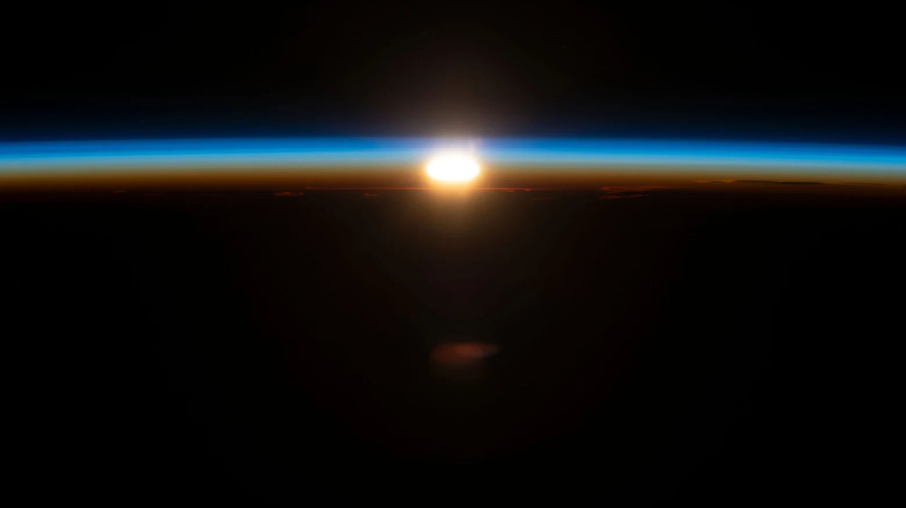
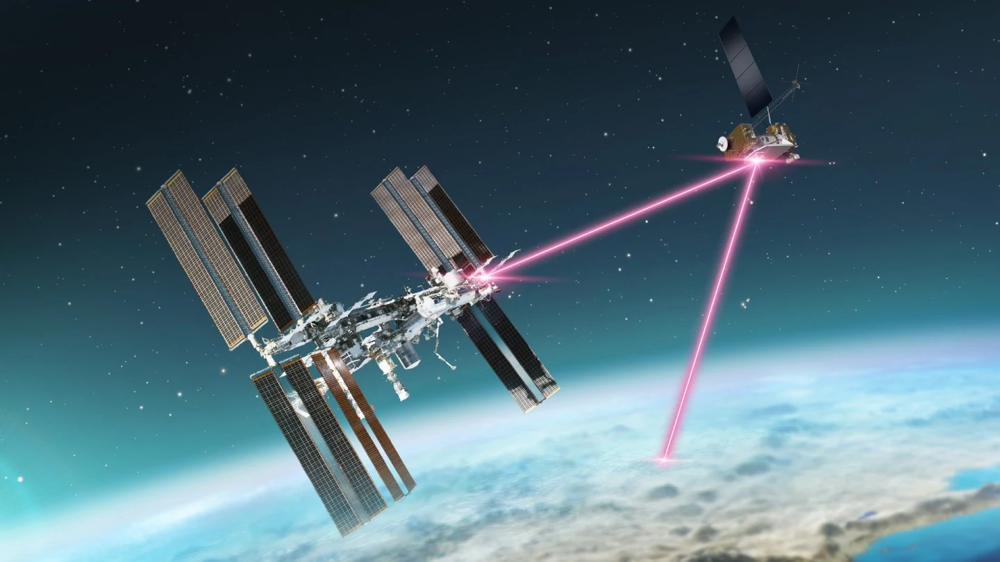
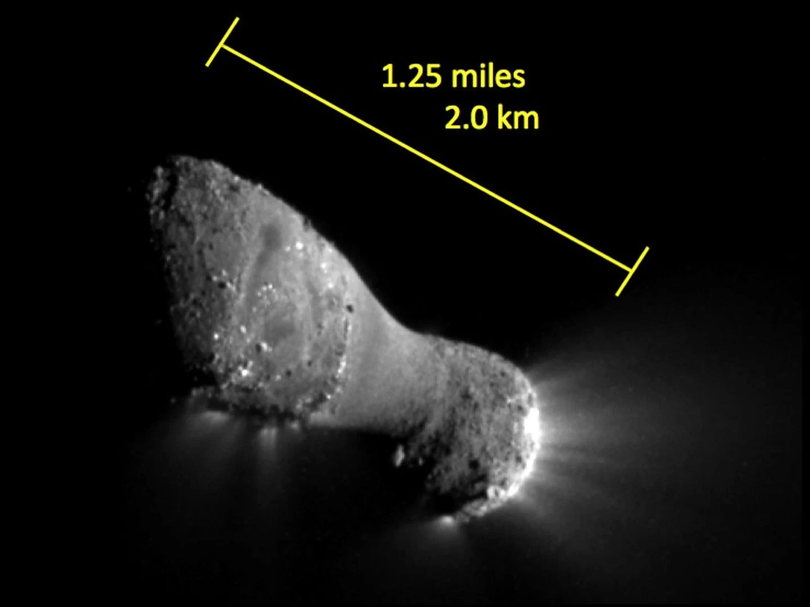
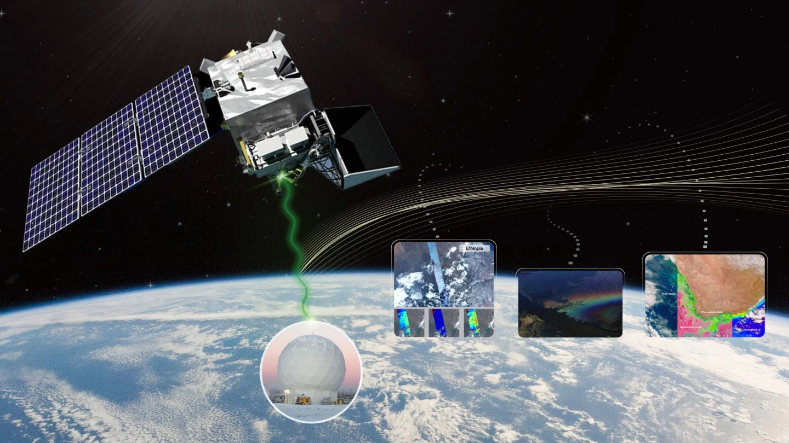

Liên lạc không gian
Mạng DTN
của NASA
Khi tàu vũ trụ mất liên lạc, dữ liệu có thể chờ tại một trạm trung gian. Tìm hiểu cách NASA chuyển từng gói dữ liệu qua những chặng kết nối cách xa nhau.
Khám phá 3 bài viết
01 Đóng gói dữ liệu
02 Lưu khi mất tín hiệu
03 Gửi khi có liên kết
Loạt bài DTN
Hành trình của dữ liệu
-

01 / Giới thiệu
DTN là gì?
Dữ liệu đi qua không gian như thế nào khi đường truyền bị gián đoạn? DTN cho phép mỗi nút giữ dữ liệu và chuyển tiếp khi có liên lạc.
Đọc bài -

02 / Quá trình phát triển
DTN đã phát triển ra sao?
Từ ý tưởng Internet liên hành tinh, NASA đưa DTN lên tàu thăm dò, trạm ISS và cuối cùng vào các dịch vụ liên lạc của mình.
Đọc bài -

03 / Ứng dụng
NASA dùng DTN ở đâu?
Từ dữ liệu vận hành của PACE đến thử nghiệm laser trên ISS và mạng chuyển tiếp quanh Mặt Trăng.
Đọc bài